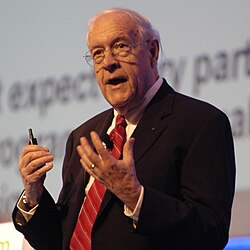

Fred Brooks | |
|---|---|
 Brooks in 2007 | |
| Born | Frederick Phillips Brooks Jr. April 19, 1931 Durham, North Carolina, U.S. |
| Died | November 17, 2022 (aged 91) |
| Education | |
| Known for | |
| Spouse |
Nancy Lee Greenwood (m. 1956) |
| Children | 3 |
| Awards |
|
| Scientific career | |
| Fields | |
| Institutions | IBM[1] University of North Carolina at Chapel Hill Duke University Harvard University |
| Thesis | The Analytic Design of Automatic Data Processing Systems (1956) |
| Howard H. Aiken[2] | |
Doctoral students | Andrew Glassner[2] |
| Website | www |
.jpg){kind=link}
Frederick Phillips Brooks Jr. (April 19, 1931 – November 17, 2022) was an American computer architect, software engineer, and computer scientist, best known for managing development of IBM's System/360 family of mainframe computers and the OS/360 software support package, then later writing candidly about those experiences in his seminal book The Mythical Man-Month.[3]
In 1976, Brooks was elected to the National Academy of Engineering for "contributions to computer system design and the development of academic programs in computer sciences".[4]
Brooks received many awards, including the National Medal of Technology in 1985 and the 1999 ACM Turing Award.[5][6]
Education
Born on April 19, 1931, in Durham, North Carolina,[7] he attended Duke University, graduating in 1953 with a Bachelor of Science degree in physics, and he received a Ph.D. in applied mathematics (computer science) from Harvard University in 1956, supervised by Howard Aiken.[2]
Brooks served as the graduate teaching assistant for Ken Iverson at Harvard's graduate program in "automatic data processing", the first such program in the world.[8][9][10]
Career and research
Brooks joined IBM in 1956, working in Poughkeepsie, New York, and Yorktown, New York. He worked on the architecture of the IBM 7030 Stretch, a $10 million scientific supercomputer of which nine were sold, and the IBM 7950 Harvest computer for the National Security Agency. Subsequently, he became manager for developing the IBM System/360 family of computers and the OS/360 software package. During this time he coined the term "computer architecture".[7]
In 1964, Brooks accepted an invitation to come to the University of North Carolina at Chapel Hill and founded the university's computer science department, which he chaired for twenty years until 1984.[11] His research was mainly in virtual environments[12] and scientific visualization.[13] He was the founding Kenan Professor of Computer Science at UNC until his retirement in 2015. The Brooks Computer Science Building on the UNC-Chapel Hill campus is named in his honor.[14]
A few years after leaving IBM, he wrote The Mythical Man-Month. The seed for the book was planted by IBM's then-CEO Thomas J. Watson Jr., who asked in Brooks's exit interview why it was so much harder to manage software projects than hardware projects. In this book, Brooks made the now-famous statement: "Adding manpower to a late software project makes it later", which has since come to be known as Brooks's law.[15] In addition to The Mythical Man-Month, Brooks is also known for the paper "No Silver Bullet – Essence and Accident in Software Engineering".[16][17]
In 2004 in a talk at the Computer History Museum and also in a 2010 interview in Wired magazine, Brooks was asked "What do you consider your greatest technological achievement?" Brooks responded, "The most important single decision I ever made was to change the IBM 360 series from a 6-bit byte to an 8-bit byte, thereby enabling the use of lowercase letters. That change propagated everywhere."[18]
A "20th anniversary" edition of The Mythical Man-Month with four additional chapters was published in 1995.[19][20]
As well as The Mythical Man-Month,[3] Brooks has authored or co-authored many books and peer reviewed papers[5] including Automatic Data Processing,[21] "No Silver Bullet",[16] Computer Architecture,[22] and The Design of Design.[23]
Service and memberships
Brooks served on a number of US national boards and committees, including:[24]
- Defense Science Board (1983–86)
- Member, Artificial Intelligence Task Force (1983–84)
- Chairman, Military Software Task Force (1985–87)
- Member, Computers in Simulation and Training Task Force (1986–87)
- National Science Board (1987–92)
Awards and honors
In chronological order:[24]
- Fellow, Institute of Electrical and Electronics Engineers (1968)
- W. Wallace McDowell Award for Outstanding Contribution to the Computer Art, IEEE Computer Group (1970)
- Computer Sciences Distinguished Information Services Award, Information Technology Professionals (1970)
- Guggenheim Fellowship for studies on computer architecture and human factors of computer systems, University of Cambridge, England (1975)
- Member, National Academy of Engineering (1976)
- Fellow, American Academy of Arts and Sciences (1976)
- Computer Pioneer Award, IEEE Computer Society (1982)
- National Medal of Technology and Innovation (1985)
- Thomas Jefferson Award, University of North Carolina at Chapel Hill (1986)
- Distinguished Service Award, Association for Computing Machinery (1987)
- Harry Goode Memorial Award, American Federation of Information Processing Societies (1989)
- Foreign Member, Royal Netherlands Academy of Arts and Sciences (1991)[25]
- Honorary Doctor of Technical Science, Swiss Federal Institute of Technology, ETH Zurich (1991)
- IEEE John von Neumann Medal, Institute of Electrical and Electronics Engineers (1993)
- Fellow of the Association for Computing Machinery (1994)[26]
- Distinguished Fellow of the British Computer Society (DFBCS) (1994)
- International Fellow of the Royal Academy of Engineering (FREng), UK (1994)
- Allen Newell Award, Association for Computing Machinery (1994)[27]
- Bower Award and Prize in Science, Franklin Institute (1995)
- CyberEdge Journal Annual Sutherland Award (April 1997)
- Turing Award, Association for Computing Machinery (1999)
- Member, National Academy of Sciences (2001)
- Received the Computer History Museum's Fellow Award, for his contributions to computer architecture, operating systems, and software engineering.[28] (2001)
- Eckert–Mauchly Award, Association for Computing Machinery and The Institute of Electrical and Electronics Engineers–Computer Society (2004)
- IEEE Virtual Reality Career Award (2010)
In January 2005, he gave the Turing Lecture on the subject of "Collaboration and Telecollaboration in Design".[29][30]
Personal life
Brooks was an evangelical Christian who was active with InterVarsity Christian Fellowship.[31]
Brooks married Nancy Lee Greenwood in 1956. They have three children.[7] He named his first son after Kenneth E. Iverson.[32]
Brooks died on November 17, 2022, at age 91. He had been in poor health following a stroke.[33][34][35][36]
See also
References
- ^ Brooks, F. P. (1960). "The execute operations—a fourth mode of instruction sequencing". Communications of the ACM. 3 (3): 168–170. doi:10.1145/367149.367168. S2CID 37725430.
- ^ a b c Fred Brooks at the Mathematics Genealogy Project
- ^ a b c Brooks, Frederick P. (1975). The mythical man-month: essays on software engineering. Reading, Massachusetts: Addison-Wesley. ISBN 978-0-201-00650-6.
- ^ "NAE Website – Dr. Frederick P. Brooks". National Academy of Engineering. Retrieved May 21, 2021.
- ^ a b Frederick P. Brooks Jr. at DBLP Bibliography Server
- ^ Shustek, Len (2015). "An interview with Fred Brooks". Communications of the ACM. 58 (11): 36–40. doi:10.1145/2822519. ISSN 0001-0782. S2CID 44303152.
- ^ a b c Booch, Grady (1999). "Frederick Brooks - A.M. Turing Award Laureate". amturing.acm.org. Association for Computing Machinery. Retrieved November 20, 2022.
- ^ Iverson, Kenneth E. (June 1954). Arvid W. Jacobson (ed.). "Graduate Instruction and Research". Proceedings of the First Conference on Training Personnel for the Computing Machine Field. Retrieved April 9, 2016.
- ^ Iverson, Kenneth E. (December 1991). "A Personal View of APL". IBM Systems Journal. 30 (4): 582–593. doi:10.1147/sj.304.0582. Retrieved April 9, 2016.
- ^ Cohen, I. Bernard; Welch, Gregory W., eds. (1999). Makin' Numbers. MIT Press. ISBN 978-0-262-03263-6.
- ^ Brooks, Frederick P. Jr. (April 19, 2007). "Frederick Phillips Brooks, Jr" (PDF). Professional website. Retrieved November 18, 2025.
- ^ Brooks, Frederick P. Jr. (1999). "What's Real About Virtual Reality" (PDF). IEEE Computer Graphics and Applications. 19 (6): 16–27. doi:10.1109/38.799723. S2CID 3235380. Archived (PDF) from the original on August 18, 2000. Retrieved January 22, 2015.
- ^ "IBM Archives – Frederick P. Brooks Jr". IBM. January 23, 2003. Archived from the original on September 4, 2006. Retrieved August 6, 2010.
- ^ "Remembering Department Founder Dr. Frederick P. Brooks, Jr". Computer Science. Retrieved September 19, 2024.
- ^ McConnell, Steve (1999). "From the Editor: Brooks' Law Repealed". www.computer.org. 16 (November/December 1999). IEEE Computer Society: 6–8. doi:10.1109/MS.1999.10032. Archived from the original on November 20, 2022. Retrieved November 20, 2022 – via stevemcconnell.com.
{{cite journal}}: CS1 maint: bot: original URL status unknown (link) - ^ a b Brooks, F. P. Jr. (1987). "No Silver Bullet – Essence and Accidents of Software Engineering" (PDF). Computer. 20 (4): 10–19. CiteSeerX 10.1.1.117.315. doi:10.1109/MC.1987.1663532. S2CID 372277. Archived (PDF) from the original on October 4, 2012.
{{cite journal}}: Cite uses deprecated parameter|citeseerx=(help) - ^ Grier, David Alan (February 2021). "There Is Still No Silver Bullet". Computer. 54 (2): 60–62. doi:10.1109/MC.2020.3042682. S2CID 231992114. Retrieved November 20, 2022.
No article has been so central to the discussion as "No Silver Bullet" by Frederick P. Brooks. Yet, almost 35 years after he wrote this contribution to knowledge, Brooks's observation remains true.
- ^ Kelly, Kevin (July 28, 2010). "Master Planner: Fred Brooks Shows How to Design Anything". Wired. Retrieved April 8, 2019.
- ^ Green, Bob, ed. (1995–2004). "The Mythical Man-Month, A Book Review". Robelle Solutions Technology. Retrieved August 6, 2010.
- ^ Bartlett, Roscoe A. (2008). "Software Engineering Reading List". github.io. Retrieved November 20, 2022.
- ^ Iverson, Kenneth E.; Brooks, Frederick P. (1969). Automatic data processing: System/360 edition. New York: Wiley. ISBN 978-0-471-10605-0.
- ^ Brooks, Frederick P.; Blaauw, Gerrit A. (1997). Computer architecture: concepts and evolution. Boston: Addison-Wesley. ISBN 978-0-201-10557-5.
- ^ Brooks, Frederick P. (2010). The Design of Design: Essays from a Computer Scientist. Reading, Massachusetts: Addison-Wesley Professional. ISBN 978-0-201-36298-5.
- ^ a b "Frederick P. Brooks, Jr". UNC Computer Science. April 19, 2007. Retrieved November 19, 2022.
{{cite web}}: CS1 maint: deprecated archival service (link) - ^ "F.P. Brooks". Royal Netherlands Academy of Arts and Sciences. Archived from the original on July 21, 2015. Retrieved July 17, 2015.
- ^ "Fred Brooks ACM awards". acm.org.
- ^ Brooks, Frederick P. (1996). "The computer scientist as toolsmith II". Communications of the ACM. 39 (3). Association for Computing Machinery: 61–68. doi:10.1145/227234.227243. ISSN 0001-0782. S2CID 34572148.
"The scientist builds in order to study; the engineer studies in order to build"
- ^ "Frederick P. Brooks – CHM Fellow Award Winner". Computerhistory.org. March 30, 2015. Archived from the original on February 10, 2025. Retrieved February 10, 2025.
- ^ "Turing Lecture – IET Conferences". Institution of Engineering and Technology. 2015. Archived from the original (web.archive.org) on September 6, 2015. Retrieved November 20, 2022.
2005 – Professor Fred Brooks Jr, FREng Dist. FBCS Founding Kenan Professor of Computer Science University of North Carolina at Chapel Hill – Collaboration and Telecollaboration in Design
- ^ Brooks, Frederick P. (January 20, 2005). "7th Annual Turing Lecture: Collaboration and Telecollaboration in Design" (video). tv.theiet.org. Institution of Engineering and Technology. Retrieved November 20, 2022.
- ^ Faculty Biography at UNC.
- ^ Brooks, Frederick P. (August 2006). "The Language, the Mind, and the Man". Vector. 22 (3). Retrieved March 16, 2018.
- ^ Lohr, Steve (November 23, 2022). "Frederick P. Brooks Jr., Computer Design Innovator, Dies at 91". The New York Times. Retrieved November 24, 2022.
- ^ Grüner, Sebastian (November 18, 2022). "8-Bit-Byte-Erfinder Fred Brooks gestorben". Golem.de (in German). Retrieved November 18, 2022.
- ^ "Remembering Department Founder Dr. Frederick P. Brooks, Jr". UNC Computer Science. November 18, 2022. Retrieved November 19, 2022.
{{cite news}}: CS1 maint: deprecated archival service (link) - ^ "Frederick P. Brooks Jr., 1931–2022" (Legacy.com). The Herald Sun. November 20, 2022. Retrieved November 20, 2022.
External links
 Media related to Fred Brooks at Wikimedia Commons
Media related to Fred Brooks at Wikimedia Commons Quotations related to Fred Brooks at Wikiquote
Quotations related to Fred Brooks at Wikiquote- Frederick P. Brooks Jr. at DBLP Bibliography Server
- Booch, Grady (1999). "Frederick Brooks - A.M. Turing Award Laureate". amturing.acm.org. Association for Computing Machinery. Retrieved November 20, 2022.